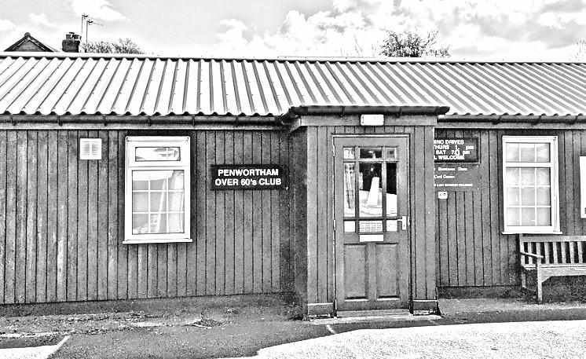

Founded 1959

We meet at the
Penwortham Over 60s Club
14 Priory Lane
Preston PR1 0AR
on the second Friday of each month from 7.30 to 9.45pm,
including an interval for refreshments.
Come along and listen to a wide variety of recorded
music in friendly company - new members and visitors
are welcome. (You don’t have to be over 60!)
The venue has a small car park, and street parking
is unrestricted after 6pm.
Buses 2, 2A, X2 and 3 run to Penwortham Tesco.
Annual subscription due in January: £10.
Members’ admission is £1.50 including refreshments.
Non-members may attend up to two meetings free of charge.
| President | Jim Westhead |
| Secretary | Vince Smith, 13 Woodford Copse, Chorley PR7 2ER vsmith3011@outlook.com 01257 272929 |
| Treasurer | Vince Smith |
| *9 January | AGM AND MEMBERS’ CHOICES | 10 July | A SELECTION OF MUSICAL ‘S’s | Chris Rodwell | |
| 13 February | BY THE DISTAFF SIDE | Jim Westhead | 14 August | YORK CONNECTIONS | †Gavin Mist |
| 13 March | FAR HORIZONS, UNKNOWN LANDS, DREAM JOURNEYS | †Sue Parker | 11 September | NATURE’S REALM | Michael Cookson |
| 10 April | A CLASSICAL WORLD TOUR | Chris Harman | *9 October | JOINT MEETING WITH PRESTON POETS THEME: Countryside | |
| 8 May | A PERSONAL MISCELLANY | Raymond Watton | 13 November | MOODS AND TRIUMPHS | †Rob Barnett |
| 12 June | LADIES’ NIGHT | Vince Smith | *11 December | CHRISTMAS PARTY AND MEMBERS’ CHOICES |
* Buffet evening. Jacob’s Join. Bring food/drink, otherwise £2 entry.
† guest presenter